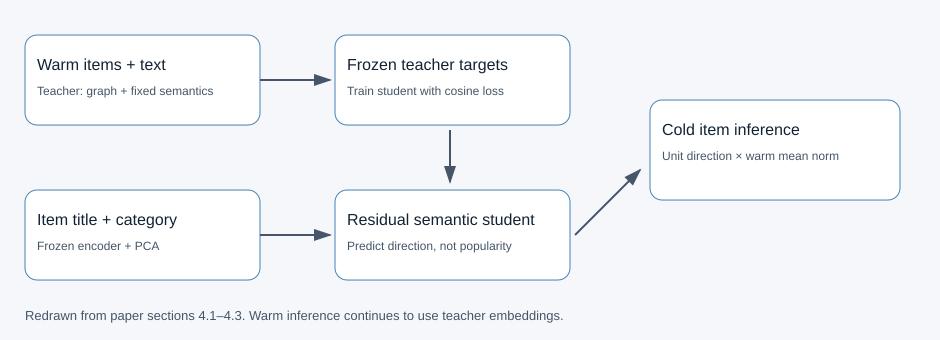
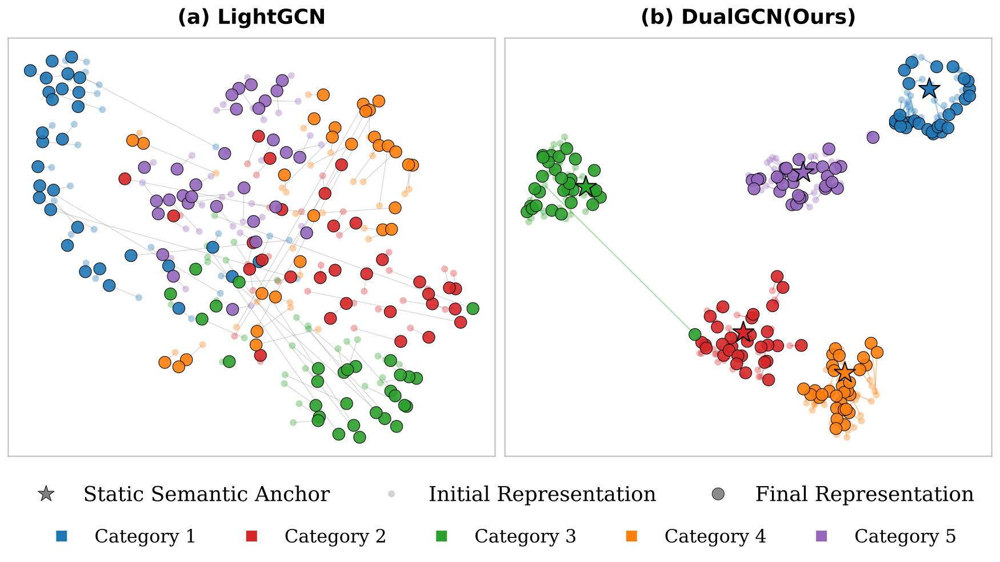
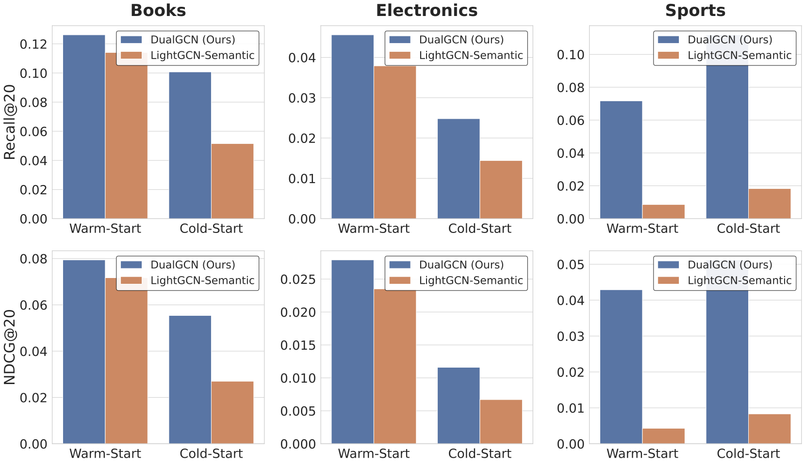

DualGCN maps interaction-free items into a collaborative recommendation space through semantic-anchored distillation. It first learns a stable graph teacher, then trains a separate content-only student. The central distinction is between a vector’s direction and its magnitude.
1. Problem and motivation
Graph recommenders propagate information through user-item interactions. An unseen item has no edges, so it cannot obtain collaborative information from neighbors. A random ID embedding does not tell the model which established items resemble it.
Titles and categories offer information available at item launch. Yet content embeddings and collaborative embeddings organize items differently: the former reflects semantic similarity, while the latter reflects interaction patterns. A content-only student can struggle to reproduce a teacher whose representation drifts freely under collaborative training. DualGCN therefore changes the teacher as well as the mapping network.
The paper’s strict cold-start setting masks every training interaction for a held-out group of items. This tests representation generation without interaction history rather than adaptation from a few examples.
2. Method
Anchor the teacher in frozen semantics
The model encodes item titles and categories, then compresses those representations with principal component analysis. The resulting semantic features remain frozen. Each teacher item starts from a trainable ID vector plus a scaled, normalized semantic vector; users retain ID embeddings.
Graph propagation supplies collaborative information, and a pairwise ranking loss teaches the teacher to prefer observed items over negatives. The experiments use 64-dimensional representations and three graph layers. Semantic anchors constrain the starting geometry without eliminating collaborative residual learning.
Train the student separately
The student takes only semantic features. A small network predicts a residual, which is added to the original semantic direction. It does not need to reconstruct the whole representation from scratch.
Training has two stages. First, the student is frozen while the teacher learns ranking. Second, the teacher is frozen and its established-item representations supervise the student. This protects established collaborative representations from alignment gradients.
The student uses cosine distillation, which aligns directions rather than forcing equality in both direction and length. The authors argue that embedding magnitude contains interaction-frequency information unavailable for unseen items. A content-only network should not be required to recover that missing statistic.

Restore magnitude at inference
Unit vectors alone are not directly comparable to teacher vectors in inner-product ranking. DualGCN computes the mean norm of established-item teacher representations. For items below an interaction-degree threshold, it normalizes the student output and multiplies it by that mean. Established items continue to use teacher representations. Both branches are scored against the user’s teacher vector.
This is scale alignment, not a prediction of each new item’s true popularity. The paper defines inference in a shared space, but its main cold-start experiments rank within a cold-only catalogue. That distinction matters when interpreting the evidence.
3. Main contribution
The design addresses two different questions: whether the teacher’s space is predictable from content, and which parts of its representation the student should reproduce. Frozen semantic anchors address the first; direction-only distillation addresses the second.
This connects the decisions to avoid end-to-end joint optimization and ordinary mean-squared error. Joint training can entangle ranking and alignment objectives. Squared error also asks the student to reconstruct magnitude, even when its inputs contain no interaction-frequency evidence.

Ablations support the usefulness of cosine alignment and semantic residuals. They do not establish that magnitude learning is unnecessary in every content-based recommender.
4. Experiments
The authors use three Amazon domains. After interaction filtering, they randomly hold out a subset of items and mask all of their training interactions. Established items receive separate training, validation and test splits. Feature-based baselines share the same text features.
The following strict cold-start Recall@20 values come from Table 3. Higher is better.
| Method | Books | Electronics | Sports |
|---|---|---|---|
| DropoutNet | 0.0780 | 0.0225 | 0.0926 |
| DeepMusic | 0.0890 | 0.0279 | 0.0827 |
| DualGCN stage 1 | 0.0870 | 0.0206 | 0.0701 |
| DualGCN stage 2 | 0.1007 | 0.0248 | 0.1119 |
On Sports, stage 2 exceeds DropoutNet by 20.8%. On Electronics, DeepMusic still has higher cold-start recall. The evidence supports useful gains across domains, not universal superiority on every metric.
Established-item performance stays close to stage 1 after student training, consistent with the frozen-teacher design. This does not establish unchanged online exposure distributions.

5. Limitations
The authors identify dynamic graphs and richer multimodal signals as future work. The current evidence uses static interaction graphs plus title and category text.
Two additional boundaries affect deployment. First, the cold-start evaluation ranks only cold items. Real feeds usually mix established and new content. Although norm reconstruction defines a shared inference space, the main table does not independently demonstrate exposure allocation or calibration in a mixed catalogue.
Second, randomly hiding interactions after interaction filtering differs from naturally arriving content. Real new posts may have weak titles, missing categories or low-quality metadata. A chronological split would test a different and operationally relevant setting.
6. Industrial implications
A platform with item text and an interaction graph could evaluate DualGCN as a new-content retrieval branch. The graph teacher supplies the established collaborative space; the student maps titles, categories or summaries into it. Item vectors can be precomputed, while retrieval retains an inner-product index.
One useful experiment records vector source, norm and interaction degree, then compares exposure and relevance for cold and established candidates in mixed lists. This distinguishes better directional prediction from a score increase caused by magnitude correction.
A second experiment uses actual launch times and reports short-title, missing-metadata and category-specific results. Compare semantic-only retrieval, the residual student and norm reconstruction separately. For UGC search, noisy text may be a more significant constraint than it is in structured product catalogues.